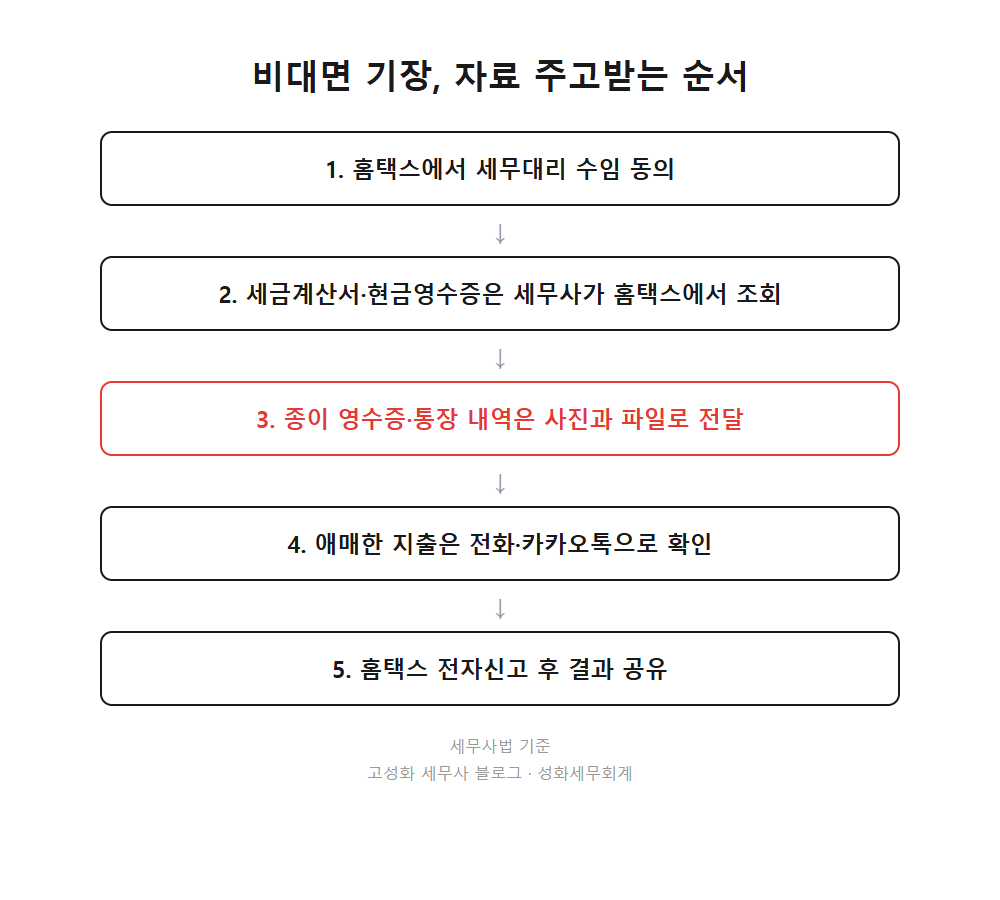
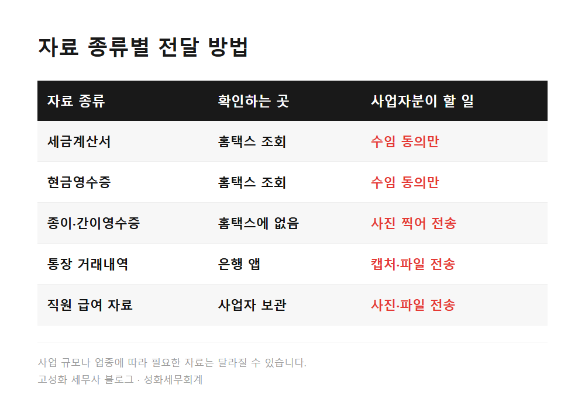
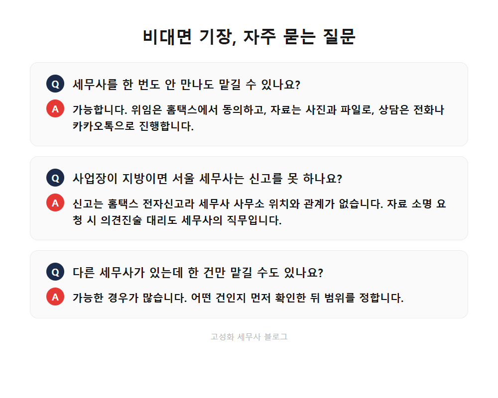

지방 사업자 서울 세무사에게 비대면 기장 맡기는 방법

사무실은 서울 서초구 방배천로에 있는데, 장부를 맡겨주시는 대표님들은 서울에만 계시지 않습니다. 경상도에도, 제주에도 계십니다.
그분들과는 얼굴을 뵙지 못하고 일하는 날이 대부분입니다. 그래도 자료를 주고받는 방식만 잡으면 생각보다 매끄럽게 돌아갑니다.
이 글을 보고 계신 분은 아마 이런 경우이실 겁니다. ①사업장이 지방인데 가까운 세무사 사무소가 마음에 안 드시거나, ②서울 세무사에게 맡겨도 되는지 모르시거나, ③서류를 들고 찾아가는 시간이 아까우시거나.
결론은 맡길 수 있다는 것입니다. 자료를 어떻게 주고받는지만 알면 됩니다.
- 세무사 사무소가 멀어도 기장을 맡길 수 있습니다
- 자료는 이렇게 주고받습니다
- 비대면이라 더 신경 쓰는 부분
한눈에 보기



자주 묻는 질문
세무사를 한 번도 안 만나도 기장을 맡길 수 있나요?
가능합니다. 위임은 홈택스에서 동의하고, 자료는 사진과 파일로 주고받고, 상담은 전화나 카카오톡으로 진행합니다.
사업장이 지방이면 서울 세무사가 신고를 못 하나요?
신고는 홈택스 전자신고로 이뤄지기 때문에 세무사 사무소 위치와 관계가 없습니다. 세무서에서 자료를 요청받는 경우에도 세무대리인이 의견진술을 대리할 수 있습니다.
이미 다른 세무사가 있는데 한 건만 맡길 수도 있나요?
상황에 따라 가능한 경우가 많습니다. 어떤 신고나 검토가 필요한지 먼저 확인한 뒤 범위를 정하는 게 순서입니다.
정리하면
오늘 내용을 짧게 정리하겠습니다. 세무사는 납세자의 위임만 있으면 사업장과 멀리 떨어져 있어도 기장과 신고를 대행할 수 있습니다. 홈택스에서 조회되는 자료는 세무사가 가져오고, 안 잡히는 증빙만 사진으로 보내주시면 됩니다.
지방에서 사업을 하고 계시고 지금 세무 관리가 마음에 걸리셨다면, 어디에 계시든 편하게 문의해 주세요.
본문 전체와 근거 조문은 블로그에서 확인하실 수 있습니다.